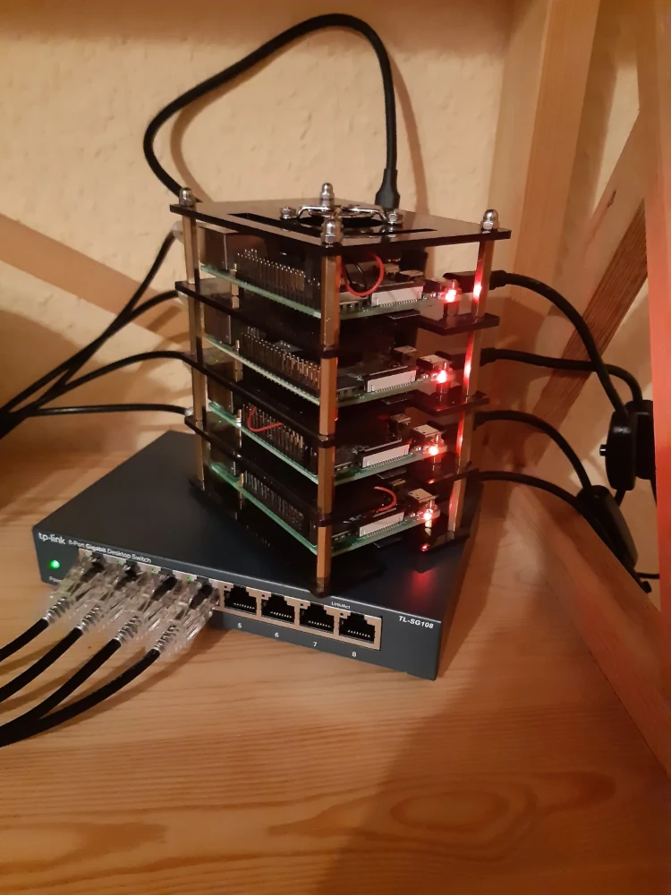
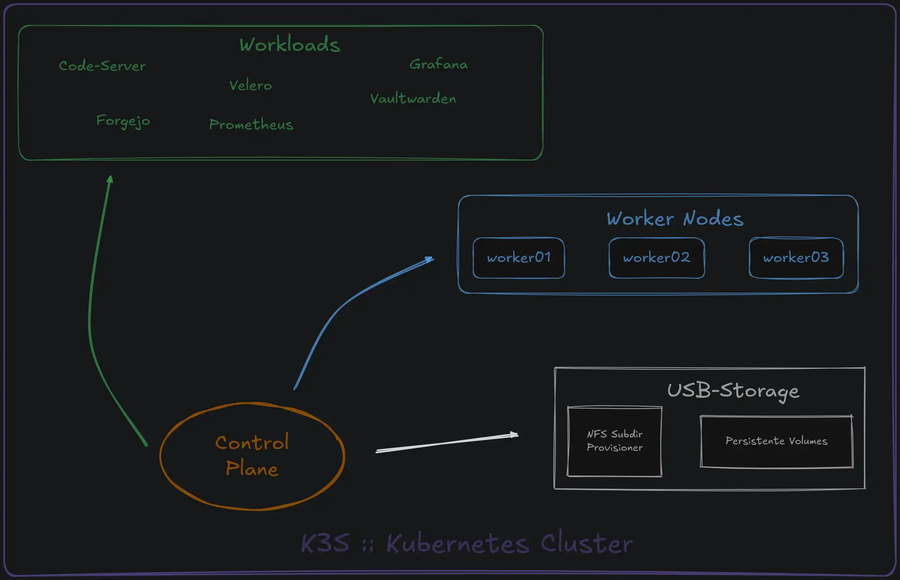

/homelab
k3s on Raspberry Pi · self-hosted, self-broken, self-fixed
/k3s cluster
kubectl get nodes -o wide
auto-refresh: 5 m
Nodes ready
lade…
Pods running
—
Namespaces
—
Deployments
—
Cluster-Daten werden geladen…
Demo-Daten —
data/cluster.json war nicht
erreichbar. Auf der Live-Seite erscheinen hier die
echten Cluster-Werte.
/storage
df -h /mnt/clusterdata
XFS · USB-NVMe an winterfell
/watcher
systemctl status watcher-heartbeat.timer
Night's Watch
/setup
ls -la /rack
Stand: Oktober 2026


Warum zusätzlich eine USB-SSD?
SD-Karten sind für Lese-Last gebaut, nicht für permanente Schreibarbeit. Kubernetes schreibt kontinuierlich in seine Datenbank (etcd) — genau das Muster, das SD-Karten korrupt werden lässt. Deshalb werden alle Daten auf einer USB-SSD mit XFS gespeichert. Die SD-Karte beherbergt nur das Betriebssystem, keine Cluster- oder Workload-Daten.
Warum Raspberry Pis statt einem Homeserver?
Weil verteilte Systeme nur verteilte Probleme offenlegen. Ein einzelner Server lehrt dich Linux; vier Nodes zwingen dich, über Scheduling, Netzwerk, Quorum und Storage-Entscheidungen nachzudenken — allesamt Fragen, die in einem produktiven Kubernetes-Umfeld täglich anstehen. Und der Cluster ist nicht statisch: Nodes lassen sich jederzeit hinzufügen oder entfernen, und der nächste Ausbauschritt ist bereits geplant — zusätzliche Control-Plane-Nodes, damit der Cluster einen Node-Ausfall ohne Downtime übersteht (High Availability).
/hardware
cat inventory.json | jq
Last updated: October 2026
| Node | Board | RAM | OS | Role | Node Age | Notes |
|---|---|---|---|---|---|---|
| winterfell | Raspberry Pi 4 | 8 GB | Pi OS | control-plane | – | etcd on USB-NVMe XFS |
| worker01 | Raspberry Pi 4 | 1 GB | Pi OS | worker | – | - |
| worker02 | Raspberry Pi 4 | 1 GB | Pi OS | worker | – | - |
| worker03 | Raspberry Pi 4 | 2 GB | Pi OS | worker | – | - |
| watcher | Raspberry Pi Zero 2W | 512 MB | Pi OS | night's watch | - | Unbound Caddy Dynacat |
| eval-01 | Raspberry Pi 4 | 2 GB | NixOS | test system | - | evaluating NixOS vs. Pi OS |
/software & tools
kubectl get namespace
auto-refresh · 5 min
Network
Traefik
Ingress-Controller für alle internen Dienste
(grafana.local, forgejo.local)
"Der mit k3s mitgelieferte Standard — läuft unauffällig seit Tag eins."
Unbound
Recursive DNS Resolver auf Raspberry Pi Zero
"Router erlaubt keine eigenen DNS-Einträge.
Unbound löst *.local auf Cluster-IPs."
Caddy
Reverse Proxy auf Raspberry Pi Zero (Dynacat
exposure)
„Für lokale Domains wie watcher.local nutzt Caddy selbstsignierte Zertifikate.
Sehr Ressourcen schonend und perfekt für ein Pi Zero."
Monitoring & Alerting
Prometheus + Grafana
Node Exporter, kube-state-metrics, custom
ServiceMonitors
"kube-prometheus-stack via Helm. Eigene Dashboards für Velero-Metriken."
Dynacat
Dashboard auf Raspberry Pi Zero (Podman)
"Leichtgewichtiges aber sehr anpassbares Dashboard.
Node-Metriken werden via Agent übermittelt."
Watcher Heartbeat
Eigenes Heartbeat-Script, pusht alle 5 Minuten
Watcher-Status
"Wer überwacht den Wächter? Ein systemd-Timer
und ein JSON-File auf GitHub."
CI/CD & Version Control
Forgejo
Git Hosting
"Forgejo für lokale, private Repos und Backup für GitHub / Codeberg."
Ansible
Playbooks / Configuration Management
"System-Updates, abgleich von Git-Repos, Analysen und Maintenance."
Storage & Backups
Velero + MinIO
Kubernetes Backup/Restore auf lokales
S3-kompatibles Ziel
"Backup von Metadaten + PVs. Restore getestet.
MinIO läuft in Docker auf Desktop, nicht im
Cluster."
NFS Subdir Provisioner
Dynamische PersistentVolumes über NFS
"Statt local-path: Daten bleiben erhalten, wenn
Pod neu geplant wird. Performance ausreichend
für kleine DBs."